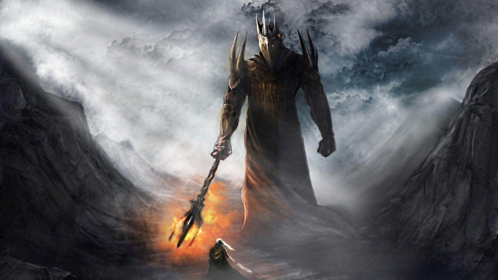
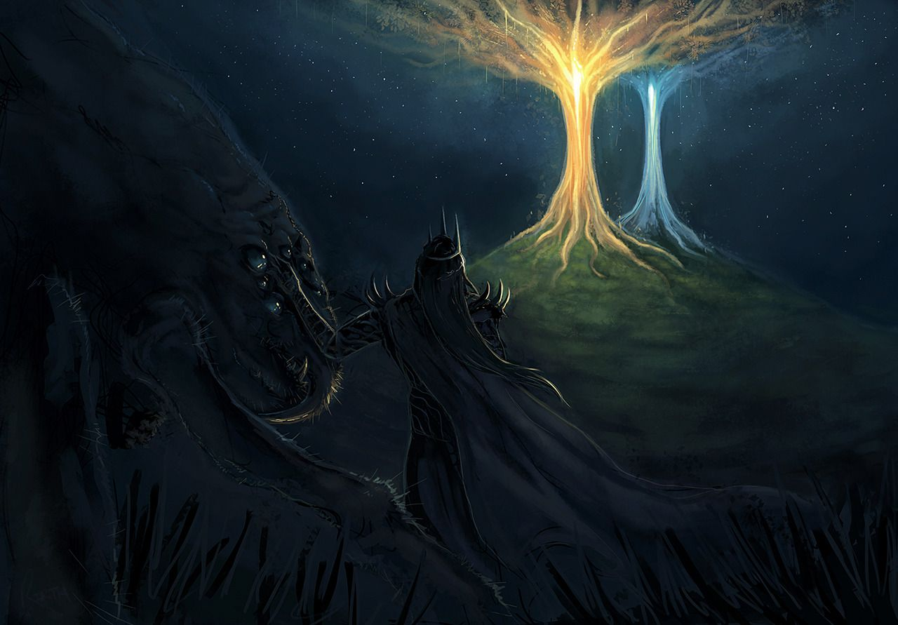
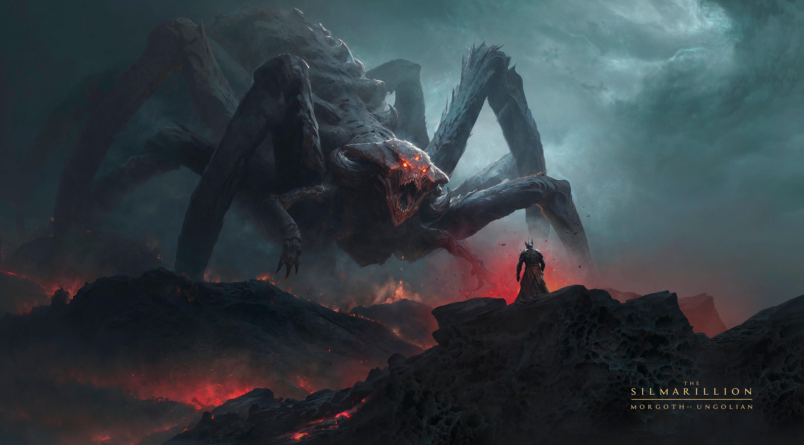

"The Two Trees of Valinor, also known as the Trees of the Valar, were Laurelin (the Gold Tree)
and Telperion (the Silver Tree), which brought light into the land of the Valar in ancient times.
They were destroyed by Melkor and the primal spider Ungoliant, but their last flower and fruit
were made by the Valar into the Sun and the Moon." (The Lord of the Rings Wiki, 2026)
Creation & Destruction
"The first sources of light for all of Arda were two enormous Lamps: Illuin, the silver one to the north,
and Ormal, the golden one to the south. These were cast down and destroyed by Melkor.
Afterward, the Valar went to Valinor and Yavanna sang into existence the Two Trees,
silver Telperion and golden Laurelin. Telperion was considered male and Laurelin female.
The Trees sat on the hill Ezellohar located outside Valmar.
They grew in the presence of all of the Valar, watered by the tears of Nienna."
(The Lord of the Rings Wiki, 2026)
Related Illustrations

Morgoth / Melkor

Ungoliant and Melkor

Ungoliant vs Morgoth
×
Key Characters and Concepts
Yavanna: The Vala associated with the creation and care of the Two Trees
Eru Iluvatar: The supreme being and creator of the universe
The Two Lamps: The initial sources of light before the creation of the Trees
Ungoliant: The primal spider that destroyed the Two Trees
Melkor/Morgoth: The fallen Vala who orchestrated the destruction of the Trees